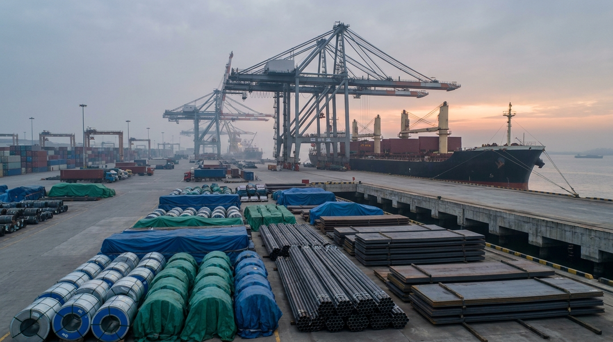

Latest Article
Published June 8, 2026
China's High-Value Steel Exports Are Sending a More Selective June Signal
China's April export mix, OECD's latest steel outlook, and renewed import pressure in India suggest that higher-value steel can still move out of China, but the better orders now depend more on destination fit, specification clarity, and document discipline than on simple volume or low headline pricing.
中国4月出口结构、OECD最新钢铁展望以及印度重新出现的进口压力共同说明，更高附加值钢材依然可以从中国顺利出口，但更优质的订单结果，正越来越取决于目的地匹配、规格清晰度和单证纪律，而不只是出货量或 headline 低价。

Read the full article
Static page, direct URL, no JS article loader.